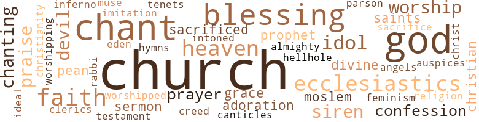

Musical Bride (The), by Talbot, Dave (1962)
222 music-related terms matched in this text.
Most frequent terms in this topic: music (47); sing (19); song (17); instruments (15); chants (14)
aria.n.01
Definition: an elaborate song for solo voice
| word | sentence |
|---|---|
| aria | Kalamwork lustily sang an aria from Mascagni 's Cavalleria Rusticana , attaining the highest note with consummate skill and perfect ease . |
canticle.n.01
Definition: a hymn derived from the Bible
| word | sentence |
|---|---|
| canticles | Some of them thought it sacrilegious , for women had never before been heard chanting these canticles . |
cello.n.01
Definition: a large stringed instrument; seated player holds it upright while playing
| word | sentence |
|---|---|
| cellos | With piano , violins , cellos , the lyre , two harps , guitar , and two vocalists , they executed both Western and Ethiopian pieces , while the bride and groom and their numerous guests en - joyed the lavish ' brunch . ' |
chant.n.01
Definition: a repetitive song in which as many syllables as necessary are assigned to a single tone
| word | sentence |
|---|---|
| chants | " The intervening few days Kalamwork and her ensemble de - voted to practicing the chants and the liturgy which the Orthodox priests used at Timquat . |
| chants | The Echegue , temporal administrator of the church , had sent some of his scouts to verify the reports that this female chorus was playing and sing - ing the sacred chants . |
| chants | The question was : " ' What have you to say about your foreign-tutored daughter who is singing the chants of the holy church with a body of women - something which , although not specified in the church edicts , is contrary to the ecclesiastical customs of this Church and State ? ' |
| chants | Those who had not the boldness to admit their persuasion were whispering that nothing was wrong with women singing the sacred chants . |
| chants | " Getahoun had certainly tried to dissuade his daughter from be - lieving that she could add the sacred chants to her repertoire . |
| chants | But he had grown to enjoy the music and bustle of this young woman ; and he had become convinced that , if the chants had to do with God , then anyone of either sex had the same right to sing them . |
| chants | ' Your daughter must be stopped from ridiculing the sacred chants ; and you , as an elder , must see that she desists from practicing them . |
| chants | It is sacrilegious enough that she should be heard practicing the chants in your house ; but to intrude herself and that bunch of wayward women into the actual rites would be a mockery and a disgrace . |
| chants | As usual , a big crowd was there listening , as Kalamwork and her ensemble played and sang the sacred chants in Geez . |
| chants | " Getahoun related as much of the story to his friend as he could , without disclosing that Kalamwork intended to have her ensemble join in the chants . |
| chants | " The Blatengeta was of the opinion that , since women did not participate in the services , their knowing the chants was absolutely harmless . |
| chants | " To think of a woman officiating at such a ceremony , even sing - ing the sacred chants , was bad enough ; but to have a troupe of them playing these hymns on their diabolical European instru - ments - that was anathema ! |
| chants | " After refreshing herself and exchanging a few final words with her father , the director returned to the music room and began the rehearsal , omitting the words of the chants , but stressing the instru - mental and hand-clapping accompaniment which they were sup - posed to render at the Timquat ceremony . |
| chants | The news had spread through Ankober that this innovation had actually been approved ; and the people were very anxious to see and hear the sacred chants performed on Western instruments . |
| chant | " From a table where sat six debauched slatterns who drank freely and reputedly dispensed illicit love , came this screeching chant : " ' Getahoun is gone , but Gashaw has come . |
chapter.n.01
Definition: a subdivision of a written work; usually numbered and titled
| word | sentence |
|---|---|
| chapter | He tried hard to reconcile himself to what he had half-heartedly decided was a closed chapter in his love life . |
chorus.n.01
Definition: any utterance produced simultaneously by a group
| word | sentence |
|---|---|
| chorus | She insisted that she be permitted to take her chorus and instru - ments with her in order to enliven the affair . |
| chorus | The Echegue , temporal administrator of the church , had sent some of his scouts to verify the reports that this female chorus was playing and sing - ing the sacred chants . |
| chorus | " The chorus of whispers rose again - this time , particularly among the counsellors and the ecclesiastics . |
cornet.n.01
Definition: a brass musical instrument with a brilliant tone; has a narrow tube and a flared bell and is played by means of valves
| word | sentence |
|---|---|
| trumpet | Did not our King David sing , as recorded in Psalm 150 : " Praise him with trumpet sound ; praise him with lute and harp ! |
cymbal.n.01
Definition: a percussion instrument consisting of a concave brass disk; makes a loud crashing sound when hit with a drumstick or when two are struck together
| word | sentence |
|---|---|
| cymbals | praise him with sounding cym - bals ; praise him with loud clashing cymbals ! " ' |
| cymbal | What with eating these various dishes , and drink - ing tedj , which was later introduced ; the singing of unfamiliar airs ; and the pure , native strains of the masinko , the kraar , the washint , the drum , and the cymbal ; we spent part of the night in true Ethiopian revelry - our first introduction , and a most note - worthy one , to the way Ethiopians , especially in the rural areas , treat their even wholly unfamiliar guests . |
dance.n.01
Definition: an artistic form of nonverbal communication
| word | sentence |
|---|---|
| dance | praise him with timbrel and dance ; praise him with strings and pipe ! |
| dances | When the time came for the dancing priests to perform their ancient , reli - gious dances , Kalamwork and her troupe could join in with their instruments . |
| dance | The discussion cen - tered particularly upon the way these people live , their spirit of community sharing , their ignorance of what was taking place in the world ; and upon this anomaly , Ato Dcbebe , red-hot from the West , who , although it was clearly apparent that he had profited from the occidental exposure , was as native in his dance as those who had never stepped out of the primitive village . |
| dance | Days before , the dance fests and tradi - tional mule is selected for the bride to ride ; gifts are bestowed upon the bride 's parents ; the followers of the bride and groom prepare their opposition ; and so forth . |
| dances | Still holding Kalamwork 's arm , Geitachew seated her with a graceful bow and smilingly remarked to Getahoun : " ' Your daughter dances like a ballerina ; plays the lyre like Orpheus ; sings as sweetly as the sirens ; and rides the most nervous horse in Ankober like a Tartar . |
dance.v.03
Definition: skip, leap, or move up and down or sideways
| word | sentence |
|---|---|
| dance | In fact , we queried the guides and Ato Debebe as to why the Ethiopians do not dance in couples as we do . |
| dance | We asked the London-trained Ethiopian if he had learned to dance Western-fashion during his five years abroad . |
| dancing | This he answered in the affirmative ; but explained that the custom of his country prohibited people dancing in couples , touching each other . |
| dance | As he motioned us to approach him , we heard the strains of flute music and the bevy of girls which had greeted us in the square flowed in like mannequins and began to dance . |
| danced | As our sight caught the gables of these rustic , yet inviting structures , highlights danced and flickered off their slants , as if from man-made prisms , insignifi - cant in contrast with the lustre of this moon . |
dirge.n.01
Definition: a song or hymn of mourning composed or performed as a memorial to a dead person
| word | sentence |
|---|---|
| dirge | Fireflies in the shade ; frogs croaking in the swamps ; owls cooing unseen ; serpents gliding in search of morsels ; now and then a roar from the king of beasts ; the moan of others in mortal struggle with some voracious creature of greater strength ; the cricket , singing its monotonous dirge ; the hyenas , chanting a weird alarm ; monkeys frolicking from branch to branch - all wrapped in the softness of the night . |
guitar.n.01
Definition: a stringed instrument usually having six strings; played by strumming or plucking
| word | sentence |
|---|---|
| guitar | With piano , violins , cellos , the lyre , two harps , guitar , and two vocalists , they executed both Western and Ethiopian pieces , while the bride and groom and their numerous guests en - joyed the lavish ' brunch . ' |
harpsichord.n.01
Definition: a clavier with strings that are plucked by plectra mounted on pivots
| word | sentence |
|---|---|
| harpsichord | " The young lady was stunningly dressed in a gown of fiery , em - bossed , magenta satin , the harpsichord designs clearly marked . |
hymn.n.01
Definition: a song of praise (to God or to a saint or to a nation)
| word | sentence |
|---|---|
| hymns | " To think of a woman officiating at such a ceremony , even sing - ing the sacred chants , was bad enough ; but to have a troupe of them playing these hymns on their diabolical European instru - ments - that was anathema ! |
intonation.n.03
Definition: the act of singing in a monotonous tone
| word | sentence |
|---|---|
| chanting | What was exasperating was not the music but the fact that women were doing the chanting . |
jig.n.01
Definition: music in three-four time for dancing a jig
| word | sentence |
|---|---|
| jig | Beginning with a slight jig , something like a sand dance , and with his shemma wrapped around his buttocks , and held loosely at both ends , this cultured tribesman sprang , stooped and rolled in a frenzy . |
lullaby.n.01
Definition: a quiet song intended to lull a child to sleep
| word | sentence |
|---|---|
| lullaby | After the coffee had been poured , Kalamwork took up her harp and began to play and sing a lullaby . |
| lullaby | After the lullaby , she graciously accepted the appre - ciation of her guests , and then settled down to sip her coffee and join in the after-dinner chat . |
lyre.n.01
Definition: a harp used by ancient Greeks for accompaniment
| word | sentence |
|---|---|
| lyre | Approvingly , some of the passersby thought that the lyre , harp , piano , and cymbal rendition was strange but mellifluous , although traditionally only the drum was used . |
| lyre | " ' I swear before you , and before the world , that my Kalamwork truly believes that it is no blasphemy for anyone to lift his voice in praise of the Divine Father ; and that the richness of the lyre does bridge the gulf between what is human and what is celestial and divine . |
| lyre | She plays the lyre quite well , and has a beautiful voice . |
| lyre | " After dinner , her father ensconced in a native bucket chair in the salon , Kalamwork took up the lyre and began to play and sing . |
| lyre | She had lowered her voice and the pitch of the lyre so that she could hear distinctly whatever her father said , planning to lure from him his strongly-guarded secret . |
| lyre | " At this , Kalamwork took up her lyre and started to play again . |
| lyre | Still holding Kalamwork 's arm , Geitachew seated her with a graceful bow and smilingly remarked to Getahoun : " ' Your daughter dances like a ballerina ; plays the lyre like Orpheus ; sings as sweetly as the sirens ; and rides the most nervous horse in Ankober like a Tartar . |
| lyre | Wherever she lived , she would continue to teach the women of Ethiopia to lift up their voices in song , and to play the lyre . |
| lyre | " The princesses , then proficient on the harp and the lyre , joined their parents in this wish . |
| lyre | She thought about the exquisite charm of the actual flowers which man , as artist , has been trying for centuries to represent on canvas , on the lyre , in verse , and through various other media . |
| lyre | " ' Six years ago , for the sole reason that I was teaching my sisters to play the lyre and raise their voices in song , I was vilified and humiliated . |
| lyre | With piano , violins , cellos , the lyre , two harps , guitar , and two vocalists , they executed both Western and Ethiopian pieces , while the bride and groom and their numerous guests en - joyed the lavish ' brunch . ' |
| lyre | Yes , I sent the princesses the toy instruments ; and their progress in , and love for , the lyre have been more than gratifying . |
motif.n.02
Definition: a theme that is repeated or elaborated in a piece of music
| word | sentence |
|---|---|
| motives | " ' I have only just made your acquaintance , which hardly gives you the right to question my motives for being here ! ' |
music.n.01
Definition: an artistic form of auditory communication incorporating instrumental or vocal tones in a structured and continuous manner
| word | sentence |
|---|---|
| music | After this , she was permitted to sing , play , and teach music unmolested ; and to the princesses , at that . |
| music | On the other hand , Blaten - geta Mankir became a fierce patron of the music and art studio of the young savante , encouraged her to carry on her ambitions , and , in most cases , sided with every whim she expressed whenever they had occasion to converse . |
| music | Passersby , astonished to hear this sacred music being played by the instruments , crowded the adjoining streets to listen and , naturally , to comment . |
| music | What was exasperating was not the music but the fact that women were doing the chanting . |
| music | Others , in fear of ex-communication , buried their views under the pretext that no females before had shown the temerity to breach these saintly preserves of the clergy , who , alone , up to that time , had rendered the Ethiopian Orthodox ritual music . |
| music | But he had grown to enjoy the music and bustle of this young woman ; and he had become convinced that , if the chants had to do with God , then anyone of either sex had the same right to sing them . |
| music | What is more , she entertains some very logical ideas about music which I , as a perfect stranger to the art , could not be ex - pected to explain . ' |
| music | " ' But no explanation as to the merits of the music is demanded , ' declared Echegue Wolde Yohannes . |
| music | Besides , she believes that the people are being entertained by the music , and that it would thus be wrong to send them away . |
| music | The members of the troupe were seated in the music room awaiting the verdict . |
| music | " After refreshing herself and exchanging a few final words with her father , the director returned to the music room and began the rehearsal , omitting the words of the chants , but stressing the instru - mental and hand-clapping accompaniment which they were sup - posed to render at the Timquat ceremony . |
| music | True , Kalamwork seemed happy ; but it was her devotion to song and music that made her so . |
| music | Shoulders , hips , hands , and head moved to the music with a jerking staccato that was extremely strange to us . |
| music | " Kalamwork remained immersed in her music , and gratified by Ankober 's steadily increasing acceptance of her strange , emanci - pated ways . |
| music | Suddenly , as in a dream , I thought I heard the strains of a harp ; and I knew that it could only be your harp , because in these six years since I left Paris , I have heard no harp music other than that played by your beautiful and accom - plished fingers . |
| music | " ' From what I have heard , Kalamwork , ' her aunt began , ' you are deeply engrossed in your music . |
| music | Her father has indicated his wish to send her to France to take up music more seriously . ' |
| music | " ' I should like to know what you think of my efforts to teach language and music to our Ankober girls , ' Kalamwork ventured boldly . |
| music | " ' To be perfectly frank , when you first started these activities , the people thought that franji music would be a bad influence upon the girls . |
| music | " ' This matter has never skipped my mind , dear , for a single moment ; although , seeing you so rapt in your music , I have hesi - tated to speak . |
| music | I have trained myself to accept you as dedicated to feminism and music , rather solemn , and terribly intense . |
| music | Returning home so changed , as Ankober made me vividly realize , I sought fulfill - ment in music and in my feeble efforts to liberate others . |
| music | " Early in the morning , as the music class assembled , the gossip mill again began to grind . |
| music | " The music directress had already observed his arrival . |
| music | She thought that , since the Blatengeta had become one of her patrons , and since Geitachew had expressed appreciation of her music at the last Timquat , some light tunes on the harp might be appropriate after dinner . |
| music | In this very house , young women are being tutored in languages and music . |
| music | " ' Woizerit Kalamwork , why do n't you expand your curriculum and add home-making to your music and language lessons ? ' |
| music | But I do not feel I should bore the gentlemen with any more music . ' |
| music | " ' If teaching music to the Ankober girls was a shock , this will really offend the prudery and primness of these cloistered Amhara women . |
| music | I often wonder what I would have done here in Ankober without my music and the girls I am trying to help . ' |
| music | And not only would this squelch the marriage ; what balabat would continue to allow his daughter to attend a music class conducted by a veritable woman of the streets ? |
| music | " The music ended . |
| music | " This pleased Kalamwork , and she told her father the date , en - tering into a detailed description of what the troupe would play , in what order , what music had been requested , and so forth . |
| music | He did not fail to mention the salutary effects of Kalamwork 's teaching upon the young women of the town , more of whom , he thought , should join the ensemble and enjoy the peace and serenity which can be found in music . |
| music | " As Kalamwork stretched out her finely shaped hand , he placed the opal ring on her third finger with these words : " ' May your fortune be bright , your music soothing , your charm enduring as this heirloom shining from your finger . |
| music | " ' He is stunned by your successful efforts to attune the hearts and ears of this place to Western music , ' added Geitachew . |
| music | " The ministers intervened with a demand that a school devoted to instruction in music , languages , and the domestic arts , be estab - lished in the name of Kalamwork Getahoun ; and that high rank , decorations , and a sizable lifelong stipend be bestowed upon the courageous young woman . |
| music | " The Court had counted on her continuing spinsterhood , the death of her father , and the revered place that music had now gained in Ankober . |
| music | " ' This time you will not face the music alone , ' Gashaw as - sured her . |
| music | As he motioned us to approach him , we heard the strains of flute music and the bevy of girls which had greeted us in the square flowed in like mannequins and began to dance . |
| Music | Music , lan - guages , and domestic sciences shall be taught to all those desirous of entering its portals . |
| music | For the most part , they were unaccustomed to the concert atmosphere and un - familiar with contemporary music . |
| music | The barking of dogs , those companions of the peasant and sen - tinels of the night , joined with the strains of the music . |
| music | She wanted to behave like a man ; she wanted to educate the women of Ankober ; she wanted to teach them music ; she wanted to do everything but the right thing - namely , marry and rear a family . |
| music | " Accompanied by her father , Kalamwork , who had learned to play the harp in the conservatory of music at Milan , ordered her trusted maid servant to fetch her harp into the palace . |
| music | " ' It is my wish , as I have indicated to your father , that you give up this music , and other obnoxious traits , and consent to be mar - ried , and to lead a life more in keeping with your tribal background and station . |
| music | " ' I have had the opportunity , in foreign lands , to learn the music and art of our forefathers . |
music.n.04
Definition: (music) the sounds produced by singers or musical instruments (or reproductions of such sounds)
| word | sentence |
|---|---|
| music | " He heard the by now familiar peal of music long before he reached the house . |
musical_instrument.n.01
Definition: any of various devices or contrivances that can be used to produce musical tones or sounds
| word | sentence |
|---|---|
| instruments | Passersby , astonished to hear this sacred music being played by the instruments , crowded the adjoining streets to listen and , naturally , to comment . |
| instruments | When the time came for the dancing priests to perform their ancient , reli - gious dances , Kalamwork and her troupe could join in with their instruments . |
| instruments | " ' Yes , she will be taking part , but only by accompanying the dancing priests with her instruments . |
| instruments | The news had spread through Ankober that this innovation had actually been approved ; and the people were very anxious to see and hear the sacred chants performed on Western instruments . |
| instruments | The ecclesiastics discovered that the instruments added a new spirit to the service ; and that , most significantly , the king and his distinguished guests showed their appreciation for the addition . |
| instruments | " It was now time for the afternoon music school session ; and Kalamwork , hearing the tuning of the instruments , hurried to her students . |
| instruments | " His amazement was increased when he saw how well the thir - teen young women managed Western songs and instruments . |
| instruments | While we were seeking a way to settle this problem , seven young men and one young woman entered - the seven , with various Ethi - opian musical instruments , and the woman being the vocalist . |
| instruments | The kraar , masinko , flute , kebero , and other national instruments , com - prised the instrumental support . |
| instruments | " The musicians played their native instruments , and their ballad singers waited in agitated silence for their turn to amuse and en - tertain . |
| instruments | " As the young women of her neighborhood stayed at home , spinning and performing other domestic chores , Kalamwork would encourage them to come to her big house where she had many Western musical instruments , which she would teach them to play , and to sing the accompanying lyrics . |
| instrument | The guards protested ; but after some haggling , the instrument was permitted within the portals of the Court . |
| instrument | He demanded that Kalamwork stop playing that vile instrument , and desist from disturbing the order and silence of the Court . |
| instruments | My three young daughters , the princesses , are now demanding that instruments be bought for them , and that they be taught how to play upon them . |
| instruments | I later found out that the toy instruments they received as Christmas gifts were sent here by you . |
| instruments | Yes , I sent the princesses the toy instruments ; and their progress in , and love for , the lyre have been more than gratifying . |
| instruments | With your leave , I should like to teach them to play more instruments , and to raise their voices in song - that heavenly release of the spirit which charms all those who have been taught to appreciate it . |
obbligato.n.02
Definition: a part of the score that must be performed without change or omission
| word | sentence |
|---|---|
| obbligato | All this provided a strange obbligato to the over - riding softness of the night . |
organ.n.05
Definition: wind instrument whose sound is produced by means of pipes arranged in sets supplied with air from a bellows and controlled from a large complex musical keyboard
| word | sentence |
|---|---|
| organ | Their necks were truly like the polished cylinders of pipe organ tubes , standing atop at - tractive chests , neither too lean nor too fat . |
paean.n.02
Definition: (ancient Greece) a hymn of praise (especially one sung in ancient Greece to invoke or thank a deity)
| word | sentence |
|---|---|
| pean | " ' Is this type of outdoor sport popular among well-bred Euro - pean young women ? ' |
| pean | I was travelling with the king 's adviser , his wife , and his daughter , Marjorie , who was about my age ; I spent a little over six years abroad among Euro - pean friends of impeccable background ; and I can only remember being chaperoned by some matrons when a group of us was at - tending some public function . ' |
piano.n.01
Definition: a keyboard instrument that is played by depressing keys that cause hammers to strike tuned strings and produce sounds
| word | sentence |
|---|---|
| piano | Approvingly , some of the passersby thought that the lyre , harp , piano , and cymbal rendition was strange but mellifluous , although traditionally only the drum was used . |
| piano | Her shapely , bare arms tapered to the long , slender fingers with which she so adroitly manipulated the strings of the harp and the key - board of the piano . |
| piano | With piano , violins , cellos , the lyre , two harps , guitar , and two vocalists , they executed both Western and Ethiopian pieces , while the bride and groom and their numerous guests en - joyed the lavish ' brunch . ' |
pipe.n.04
Definition: a tubular wind instrument
| word | sentence |
|---|---|
| pipe | praise him with timbrel and dance ; praise him with strings and pipe ! |
| pipe | Their necks were truly like the polished cylinders of pipe organ tubes , standing atop at - tractive chests , neither too lean nor too fat . |
preamble.n.01
Definition: a preliminary introduction to a statute or constitution (usually explaining its purpose)
| word | sentence |
|---|---|
| preamble | " Such was the touching preamble to Geitachew 's declaration which he ended on the firm note that the Fates would answer his prayer of love . |
promenade.n.01
Definition: a formal ball held for a school class toward the end of the academic year
| word | sentence |
|---|---|
| prom | " On his way home , he decided that , come what may , he must confront Kalamwork with the arrangements , and exact her prom - ise to marry before it was too late . |
| prom | He assumed that , since Kalamwork had not mar - ried during these six years , she was probably holding to the prom - ise they had made . |
refrain.n.01
Definition: the part of a song where a soloist is joined by a group of singers
| word | sentence |
|---|---|
| chorus | The damsels , in chorus , regaled us with a ballad as amorous as the mating song of love birds ; but in vain ! |
score.n.02
Definition: a written form of a musical composition; parts for different instruments appear on separate staves on large pages
| word | sentence |
|---|---|
| score | " I consider that this evened the score : Our enemies abducted our women in order to subdue us ; we met that assault by castrat - ing them and killing their soldiers in battle . " |
sing.v.02
Definition: produce tones with the voice
| word | sentence |
|---|---|
| sing | Did not our King David sing , as recorded in Psalm 150 : " Praise him with trumpet sound ; praise him with lute and harp ! |
| sing | After this , she was permitted to sing , play , and teach music unmolested ; and to the princesses , at that . |
| sing | The Echegue , temporal administrator of the church , had sent some of his scouts to verify the reports that this female chorus was playing and sing - ing the sacred chants . |
| singing | The question was : " ' What have you to say about your foreign-tutored daughter who is singing the chants of the holy church with a body of women - something which , although not specified in the church edicts , is contrary to the ecclesiastical customs of this Church and State ? ' |
| singing | Those who had not the boldness to admit their persuasion were whispering that nothing was wrong with women singing the sacred chants . |
| sing | But he had grown to enjoy the music and bustle of this young woman ; and he had become convinced that , if the chants had to do with God , then anyone of either sex had the same right to sing them . |
| sing | But remember that , by condemning us , you will yourselves be betray - ing the precepts and examples of the Great Teacher before the company of angels and archangels who sing perpetually for joy in heaven above . ' |
| sang | As usual , a big crowd was there listening , as Kalamwork and her ensemble played and sang the sacred chants in Geez . |
| sing | The whole neighborhood congregates here while my daughter teaches the women to play the franji instru - ments and sing their songs . ' |
| sing | " To think of a woman officiating at such a ceremony , even sing - ing the sacred chants , was bad enough ; but to have a troupe of them playing these hymns on their diabolical European instru - ments - that was anathema ! |
| sing | But no words might they utter ; no songs could they sing ! |
| sing | ' Is Kalamwork all right , and she is going to play and sing as she proposed ? ' |
| sing | " After dinner , her father ensconced in a native bucket chair in the salon , Kalamwork took up the lyre and began to play and sing . |
| singing | Fireflies in the shade ; frogs croaking in the swamps ; owls cooing unseen ; serpents gliding in search of morsels ; now and then a roar from the king of beasts ; the moan of others in mortal struggle with some voracious creature of greater strength ; the cricket , singing its monotonous dirge ; the hyenas , chanting a weird alarm ; monkeys frolicking from branch to branch - all wrapped in the softness of the night . |
| sing | After the coffee had been poured , Kalamwork took up her harp and began to play and sing a lullaby . |
| sing | ' Why do n't you play and sing that piece you performed so beauti - fully last Sunday ? |
| sung | " After listening with the raptest attention , Blatengeta remarked that he had sung this ballad when he was a lad , but had never realized how rich and unusual it could sound when properly ar - ranged and delivered . |
| sing | " ' Do you mean that , unrehearsed , you sing this theme song so well ? ' |
| sing | " ' If this is a theme song , I am sure of at least one thing - that , with you beside me , I shall sing it untiringly . ' |
| sing | " Geitachew had arranged with a trio of local troubadours to play and sing , for the occasion , the favorite ballad , Anchi Lij , the song of a lover to his love , set in waltz time . |
| sang | " Kalamwork , whose preference was always for the harp , then played and sang Brahms ' Lullaby . |
| sing | " Gashaw had heard of Kalamwork 's musical accomplishments , but had never before had the opportunity to hear her sing and ac - company herself on the harp . |
| sing | For the first time in Ethiopian history , an engagement ceremony was graced with a modern , musical ensemble of Ethiopian young women , who insisted that they be permitted to play and sing for the occasion . |
| sang | Moreover , few of them knew English , the language in which the ' Musical Bride ' sang . |
| sing | " As the young women of her neighborhood stayed at home , spinning and performing other domestic chores , Kalamwork would encourage them to come to her big house where she had many Western musical instruments , which she would teach them to play , and to sing the accompanying lyrics . |
| sing | " In response to the king 's injunction , she ran back to her harp and began to sing in a beautiful soprano as she played a rhapsody that held the king and his train spellbound . |
| sang | Kalamwork lustily sang an aria from Mascagni 's Cavalleria Rusticana , attaining the highest note with consummate skill and perfect ease . |
singing.n.01
Definition: the act of singing vocal music
| word | sentence |
|---|---|
| singing | There she was , playing the harp and singing lustily . |
| singing | There were solos and choral singing , with the shy females trying to in - trude their timid persons into the fiesta , but obviously deferring to their male counterparts . |
| singing | " At about five-thirty , Kalamwork , singing merrily as a lark , vanished into her boudoir to dress , and perfume herself to receive her guests . |
| singing | What a surprise to find him lying in Yshetu 's lap singing a love song to Kalamwork ! |
| singing | What with eating these various dishes , and drink - ing tedj , which was later introduced ; the singing of unfamiliar airs ; and the pure , native strains of the masinko , the kraar , the washint , the drum , and the cymbal ; we spent part of the night in true Ethiopian revelry - our first introduction , and a most note - worthy one , to the way Ethiopians , especially in the rural areas , treat their even wholly unfamiliar guests . |
| singing | " Last Maskarem , the people said that his bondsmen were better than mine : that they were better dressed ; that they played googs [ a native game ] better ; that , in the shooting display , they won against my best guards ; and that , in the singing competition , where they are reputedly better than any troupe in Makalle , they decried me and my household in song . |
| singing | The ensuing extravaganza of singing , dancing , drinking , and eating at Debre Tabor 's mansion made the festivities at the famed castle look like a drab and poorly-attended prayer meeting . |
| singing | We then heard women 's voices singing and - lo and behold ! |
sonata.n.01
Definition: a musical composition of 3 or 4 movements of contrasting forms
| word | sentence |
|---|---|
| sonata | The scene presented swift changes in light and shade , and the galloping hoofs struck a rhythmic beat to compose a veritable moonlight sonata . |
song.n.01
Definition: a short musical composition with words
| word | sentence |
|---|---|
| song | Kalamwork played that popular Italian song O Sole Mio upon her harp . |
| song | " ' Deny her and her ensemble this God-given privilege , and you will stand in the sight of the Almighty , not as His disciples , but as a stumbling block to those who , by lifting their voices in song , seek to attune their souls with the God whom this church is com - mitted to serve . |
| songs | The whole neighborhood congregates here while my daughter teaches the women to play the franji instru - ments and sing their songs . ' |
| songs | But no words might they utter ; no songs could they sing ! |
| song | " ' Hello , Dad , it 's you , ' she interrupted her song . |
| song | True , Kalamwork seemed happy ; but it was her devotion to song and music that made her so . |
| song | I confess that , although my sleeping and waking thoughts are attuned to song , both twilight and dawn giving me new inspiration , I suf - fer from an obsession which seems to deny me the beau - tiful conclusion your letter suggests . |
| song | " ' Do you mean that , unrehearsed , you sing this theme song so well ? ' |
| song | " ' If this is a theme song , I am sure of at least one thing - that , with you beside me , I shall sing it untiringly . ' |
| song | " Geitachew had arranged with a trio of local troubadours to play and sing , for the occasion , the favorite ballad , Anchi Lij , the song of a lover to his love , set in waltz time . |
| songs | " His amazement was increased when he saw how well the thir - teen young women managed Western songs and instruments . |
| song | Wherever she lived , she would continue to teach the women of Ethiopia to lift up their voices in song , and to play the lyre . |
| song | What a surprise to find him lying in Yshetu 's lap singing a love song to Kalamwork ! |
| song | " ' Six years ago , for the sole reason that I was teaching my sisters to play the lyre and raise their voices in song , I was vilified and humiliated . |
| song | " Immediately after Kalamwork finished her song , beads of joy - ous tears welled up into the corner of her enormous , almond - shaped eyes . |
| song | " The King 's representatives among the guests were now more than ever convinced that , to raise her voice in song , did not dimin - ish the bride one iota . |
| song | Almost immediately after her song , bugles sounded at the entrance of the huge tent . |
| songs | " The company was regaled with the songs of the ballad singers , who eulogized the bride and the groom at every turn with their prolific improvisation supported by lilting Ethiopian airs . |
| song | " Last Maskarem , the people said that his bondsmen were better than mine : that they were better dressed ; that they played googs [ a native game ] better ; that , in the shooting display , they won against my best guards ; and that , in the singing competition , where they are reputedly better than any troupe in Makalle , they decried me and my household in song . |
| songs | The smaller shrubs formed a jagged edge , like the crags of a can - yon ; and the siren of the hyenas interrupted the charm of the welcomers ' songs . |
| song | The damsels , in chorus , regaled us with a ballad as amorous as the mating song of love birds ; but in vain ! |
| song | With your leave , I should like to teach them to play more instruments , and to raise their voices in song - that heavenly release of the spirit which charms all those who have been taught to appreciate it . |
theme.n.03
Definition: (music) melodic subject of a musical composition
| word | sentence |
|---|---|
| theme | " ' That was an improvisation on an Ethiopian folk theme . |
| theme | " ' Do you mean that , unrehearsed , you sing this theme song so well ? ' |
| theme | " ' If this is a theme song , I am sure of at least one thing - that , with you beside me , I shall sing it untiringly . ' |
| theme | This story , like the one which he had us live through with him in his district , pertains to love and marriage - the focal theme being the counterplay of emotions and customs which , as in all human society , characterizes the life of young people and their parents . |
timbrel.n.01
Definition: small hand drum similar to a tambourine; formerly carried by itinerant jugglers
| word | sentence |
|---|---|
| timbrel | praise him with timbrel and dance ; praise him with strings and pipe ! |
tone.v.01
Definition: utter monotonously and repetitively and rhythmically
| word | sentence |
|---|---|
| chanting | Some of them thought it sacrilegious , for women had never before been heard chanting these canticles . |
| chant | " But the king had spoken ; and since he was not only the ' De - fender of the Faith , ' but likewise the embodiment of temporal power , the conclave , by majority opinion , wisely decided upon a compromise : " Only the priests should chant during the ceremonies . |
| chanting | Fireflies in the shade ; frogs croaking in the swamps ; owls cooing unseen ; serpents gliding in search of morsels ; now and then a roar from the king of beasts ; the moan of others in mortal struggle with some voracious creature of greater strength ; the cricket , singing its monotonous dirge ; the hyenas , chanting a weird alarm ; monkeys frolicking from branch to branch - all wrapped in the softness of the night . |
| intoned | " ' It seems , Kalamwork dear , ' he intoned , ' that I am not quite clear on all your pre-conditions for marriage to the man whom I have chosen to be your husband . |
| chanting | Geita - chew thoroughly enjoyed it ; it recalled many similar evenings , in England and on the Continent , which might have been equally pleasant had they likewise been graced by the presence of this en - chanting and talented girl . |
| chant | Suddenly , he began to chant some words completely unintelligible to the ex-bajerond , which chanting continued for nearly an hour . |
| chanting | Suddenly , he began to chant some words completely unintelligible to the ex-bajerond , which chanting continued for nearly an hour . |
tune.n.01
Definition: a succession of notes forming a distinctive sequence
| word | sentence |
|---|---|
| tune | We had not experienced anything like this before , and the best that we could do was to join in the tune , which , by this time , had grown almost familiar . |
| strains | I am usually left wondering whether I shall ever enjoy , even for a mo - ment , a life devoid of the stresses and strains which my ambitions on behalf of my sisters of Ankober hourly press upon me . |
| tunes | She thought that , since the Blatengeta had become one of her patrons , and since Geitachew had expressed appreciation of her music at the last Timquat , some light tunes on the harp might be appropriate after dinner . |
| line | The surroundings were full of creatures ; and apart from the swarming insect families , the crawling of reptiles was audible al - most on the barest perimeter of the fires , which formed the only dividing line between us and the dwellers of the Ethiopian forest . |
| strains | Do you believe that such charity could endure the stresses and strains of married life ? ' |
| line | While we were murmuring and gesticulating in this manner , a long line of pitcher-bearers came toward our tent . |
| tunes | After a while the vocalist joined in , and the rhapsody of Ethiopian tunes , most unfamiliar to our ears , held sway . |
violin.n.01
Definition: bowed stringed instrument that is the highest member of the violin family; this instrument has four strings and a hollow body and an unfretted fingerboard and is played with a bow
| word | sentence |
|---|---|
| violins | With piano , violins , cellos , the lyre , two harps , guitar , and two vocalists , they executed both Western and Ethiopian pieces , while the bride and groom and their numerous guests en - joyed the lavish ' brunch . ' |
waltz.n.03
Definition: a ballroom dance in triple time with a strong accent on the first beat
| word | sentence |
|---|---|
| waltz | " Geitachew had arranged with a trio of local troubadours to play and sing , for the occasion , the favorite ballad , Anchi Lij , the song of a lover to his love , set in waltz time . |
waltz.v.01
Definition: dance a waltz
| word | sentence |
|---|---|
| waltzed | " As he returned to the table and the party arose , he took Kalamwork in his arms and , to the consternation of their elders , waltzed her away . |
whistle.n.01
Definition: the sound made by something moving rapidly or by steam coming out of a small aperture
| word | sentence |
|---|---|
| whistling | " A sound like the whistling of a strong , north wind was sud - denly heard , the screen blew menacingly , and the old windows screeched as the answer came in an audible whisper : ' Getahoun , my poor Getahoun ! ' |
whistle.v.01
Definition: make whistling sounds
| word | sentence |
|---|---|
| whistle | We enjoyed an alluring eye-fest , but could not even whistle to communicate our appreciation . |
| whistled | " When Kalamwork descended the stairs , both Almaz and Ga - shaw whistled appreciatively at her elegant appearance . |
whistle.v.05
Definition: make a whining, ringing, or whistling sound
| word | sentence |
|---|---|
| sings | Still holding Kalamwork 's arm , Geitachew seated her with a graceful bow and smilingly remarked to Getahoun : " ' Your daughter dances like a ballerina ; plays the lyre like Orpheus ; sings as sweetly as the sirens ; and rides the most nervous horse in Ankober like a Tartar . |
yodel.v.01
Definition: sing by changing register; sing by yodeling
| word | sentence |
|---|---|
| yodeling | They had concluded an appearance at the party of yodeling women which welcomed the bride and groom as they returned from the church . |
yodeling.n.01
Definition: singing by changing back and forth between the chest voice and a falsetto
| word | sentence |
|---|---|
| yodeling | " The drummers kept beating their rhythmic staccato ; women and girls among the native dancers jumped and writhed , thudding their sterna , jerking their shoulders , and yodeling in merriment . |
155 violence-related terms matched in this text.
Most frequent terms in this topic: jealousy (12); hate (10); kill (9); murder (7); harm (6)
anger.n.01
Definition: a strong emotion; a feeling that is oriented toward some real or supposed grievance
| word | sentence |
|---|---|
| anger | Pulling his regal cape around him , in obvious anger , he said : " ' Take her away and I shall hold Getahoun responsible for any more perversions that stem from this asmari [ singer , in derogatory sense ] . ' |
| anger | " ' I was wondering that myself , ' retorted Amabitch , her voice wretched with disappointment and anger . |
| anger | He bowed low and left , his heart burning with anger at having been what he interpreted as out - witted by the Finfinie stranger . |
attack.v.01
Definition: launch an attack or assault on; begin hostilities or start warfare with
| word | sentence |
|---|---|
| assailed | " The women in Kalamwork 's ensemble were frequently assailed , by the diehards of Ankober 's traditions , with slurs and buffoonery about their leader and Geitachew . |
| assailed | The Blat - engeta sought to finalize the engagement and proceed with the mar - riage arrangements , although some doubt assailed him as to whether , given Kalamwork 's reputation , the union would ever meet with Ankober 's approval . |
| assail | At this , Salem unsheathed his sword and , thrusting the guards aside , attempted to assail Admazu , even in front of the king . |
battle.v.01
Definition: battle or contend against in or as if in a battle
| word | sentence |
|---|---|
| battling | " As a man battling odds which he estimates are insurmountable , Geitachew retorted to Kalamwork 's last words : " ' Did you say that our talk was rewarding ? |
besiege.v.01
Definition: surround so as to force to give up
| word | sentence |
|---|---|
| besieged | We readily recognized that our " rocks " were in danger of being besieged ; and although we were fairly armed , so were our prob - able - and innumerable - adversaries . |
butcher.v.01
Definition: kill (animals) usually for food consumption
| word | sentence |
|---|---|
| slaughtered | A great deal of grain is gathered and stored ; large earthen pots of talla and tedj are brewed ; choice cattle , sheep , and goats are slaughtered and cooked ; and the best community drummers and troubadours are usually engaged . |
| slaughtered | " Several young heifers and steers had been slaughtered for the occasion . |
| slaughtered | The three deceivers must have connived to present the sash stained with the blood of a slaughtered chicken - something that could never hap - pen in the enlightened society of Raya and Gazebo ! " |
character_assassination.n.01
Definition: an attack intended to ruin someone's reputation
| word | sentence |
|---|---|
| assassination | Yet , Geta , I have been driven not only to contemplate hurting her feelings ; but had actually planned a character assassination . ' |
contemn.v.01
Definition: look down on with disdain
| word | sentence |
|---|---|
| despised | " Abuna Theddius , who had , since the first meeting , undergone a change of heart , spoke next : " ' If , Your Grace , it has been decided that these strange , musical women of Ankober may join in playing for the dancing priests ; and if it be remembered that the Master never , in His ministry , despised the weaker sex , I think that Immabet Kalamwork should be allowed to hear for herself this gathering 's decision . |
| despise | But should you attempt anything rash or foul against the persons of Kalamwork or Gashaw - - so help me , I swear that I shall disown , disinherit , and despise you evermore ! |
| scorned | " This Geitachew envisioned his great moment of triumph , little suspecting that the wiles of a scorned and deceived woman would foil his plot . |
| scorn | I would be content to accept this as a token that she does not scorn me utterly . |
| despised | " ' Today , in the course of Your Majesty 's recognition of this very art which once you all so feared and despised , the mere mat - ter of my dress puts me in a position none the less painful . |
craze.n.02
Definition: state of violent mental agitation
| word | sentence |
|---|---|
| frenzy | Beginning with a slight jig , something like a sand dance , and with his shemma wrapped around his buttocks , and held loosely at both ends , this cultured tribesman sprang , stooped and rolled in a frenzy . |
| frenzy | In his frenzy , therefore , Geitachew de - cided to murder Gashaw on the latter 's journey back to Finfinie . |
| frenzy | " ' If you remember , before Yshetu had time to dry her tears , I knew that Geitachew had been drunk , had laid his head in her lap , and had told the girl , in his frenzy , how much he adored you . |
desecrate.v.01
Definition: violate the sacred character of a place or language
| word | sentence |
|---|---|
| desecrate | She who had defiled local womanhood by inducing it to emulate men , was now attempting to desecrate the holiness of the church ! |
destroy.v.04
Definition: put (an animal) to death
| word | sentence |
|---|---|
| destroy | " ' Contrary to popular belief , I have never attempted to destroy or disregard the fundamental observances of my country . |
| destroy | " ' But , Kalamwork , my dear , this is a principal one of those customs which you have just said you never wished to destroy or disregard , ' rejoined the old man . |
displeasure.n.01
Definition: the feeling of being displeased or annoyed or dissatisfied with someone or something
| word | sentence |
|---|---|
| displeasure | " Kalamwork then related the succession of events , with Almaz indicating her displeasure at intervals . |
draw.v.23
Definition: pull (a person) apart with four horses tied to his extremities, so as to execute him
| word | sentence |
|---|---|
| drawn | " While farewells were being exchanged , Geitachew 's new coach was drawn up . |
| draw | " While Kalamwork was hesitant to draw any hasty conclusion , her aunt feared that , without proper timing - meaning that they should wed as soon as it was humanly possible - the palace offer might somehow throw the marriage into eclipse . |
eliminate.v.03
Definition: kill in large numbers
| word | sentence |
|---|---|
| eradicate | " Our custom , which sounds cruel and seems to alarm you , is not half as bad as the devastation war leaves - as the attitudes and sentiments which are even harder to eradicate than war itself . |
elimination.n.05
Definition: the murder of a competitor
| word | sentence |
|---|---|
| elimination | " This sudden disappearance of Blatengeta 's servants seemed to promise some elimination , so Getahoun agreed to accompany his crony while he investigated their behavior . |
envy.n.01
Definition: a feeling of grudging admiration and desire to have something that is possessed by another
| word | sentence |
|---|---|
| envy | Geitachew was rot - ten and green with envy , and with the vengeful plot he had con - trived to damage Kalamwork 's reputation . |
| envy | Geitachew used Amabitch 's envy as a tool to wound Kalamwork , and finally , Gashaw . |
| envy | In the scram - ble for survival , rivalry bred envy and jealousy . |
| envy | While on the surface things seemed placid enough , their mutual envy expressed itself in very deep - rooted hatred . |
fight.v.02
Definition: fight against or resist strongly
| word | sentence |
|---|---|
| fought | We fought to kill our enemies , to protect our land and our honor . |
| fight | It is ungodly that men should fight each other ; that tribe should be against tribe , people against people , and nation against nation . |
| defending | Surely this is enough to convince you that you are defending a lost cause ; and no lost cause , when lost , is as lost as that of love , my son . ' |
| fought | The aristocracy which set the social pattern in pristine times , though dying from the change of dynastic rule , still fought doggedly to maintain some of its trappings . |
| fought | Not only did he worship and believe in his daughter , he fought many duels with the spear to protect her name . |
fury.n.01
Definition: a feeling of intense anger
| word | sentence |
|---|---|
| rage | " When told that her servants had not found the purported docu - ment on the person of the officer , Amabitch went into a frightful rage . |
gag.v.06
Definition: cause to retch or choke
| word | sentence |
|---|---|
| choked | She only said , in a voice choked with emotion : " ' Shall I really live to see this cherished dream come true ! |
| choked | " Just then the Negadras , a stem man , turned to Gashaw and his brothers and , in a choked voice , said : " ' Then the poison was meant for you , my son . |
| choked | " She limped forward , kissed Kalamwork and embraced Gashaw , and said in a voice choked with emotion : " Your agreement , as you both know , has my blessing , and that of your departed father , Getahoun , whose last breath still caresses you . |
gun.n.01
Definition: a weapon that discharges a missile at high velocity (especially from a metal tube or barrel)
| word | sentence |
|---|---|
| gun | Ac - curate with both gun and spear , he took a tack down a ravine , and there , as far as the eye could see , were animals of all kinds . |
| guns | With guns and spears every man aimed , fired , and repeated , until , by nine o'clock , we had bagged more game than we could transport . |
harm.v.01
Definition: cause or do harm to
| word | sentence |
|---|---|
| harm | " ' What is rather annoying , my name has been mentioned with his by the local gossips ; and some of the more pernicious women have even sworn to harm me if the rumor is confirmed . ' |
| harmed | As for the people who lived in the district , and espe - cially hunters , they were not harmed at all ; the great beast took a rare liking for human beings , whom he sought even to protect . |
| harm | Amabitch and her bunch can have Geitachew , but they will not harm a hair of my Kalamwork 's head ! ' |
| harm | But you can bet your life , those ugly , stupid , jealous creatures will never be allowed to harm Kalamwork ! ' |
| harm | It might harm your chances of maintaining the friendship which Kalamwork and you now enjoy , and close the door to future suc - cess , ' ended the Blatengeta . |
hate.n.01
Definition: the emotion of intense dislike; a feeling of dislike so strong that it demands action
| word | sentence |
|---|---|
| hatred | " ' You professed to love me , while this was just another way to demonstrate your hatred . |
| hatred | It was difficult for him to reconcile Geitachew 's present behavior with his avowed hatred for him which he had made so obvious the few times their paths had crossed . |
| hatred | While on the surface things seemed placid enough , their mutual envy expressed itself in very deep - rooted hatred . |
hate.v.01
Definition: dislike intensely; feel antipathy or aversion towards
| word | sentence |
|---|---|
| hate | " ' I hate to interrupt your speech , but do I understand that you are trying to make a match between my boy Geitachew and Kalamwork ? ' |
| hate | These folks are all alike the dog in the manger : They ca n't get Geitachew for their own kith and kin , so they hate for anyone else to have him . |
| hate | Once inside , the Blatengeta remarked to Geitachew : " ' I hate to say this , but probably Kalamwork has had a lover and is afraid that she can not meet the requirements of Ankober . ' |
| hates | He hates the run-of-the-mill Ankober women , and imagines that he would like to spend the rest of his life with me . |
| hate | The men do n't like her because she is intelligent ; the hussies hate her because she is heads and shoulders above them in every way . |
| hated | She hated Kalamwork 's guts ; but did not know whether the young man 's heart had yet rejected the music director as a result of the rumor she had been instrumental in spreading . |
| hated | she would become his most trusted ally , for she hated Kalamwork 's very existence . |
| hate | I hate him ! |
| hate | I hate even to hear his name ! ' |
| hate | She kept crying to herself , ' I hate him ! |
| hate | I hate him ! ' |
| hated | Aunt Almaz hated the presence of Geitachew in the house . |
| hated | As she had said to her aunt , she hated him , and did not wish to be put into any further compromising situations with the detestable young man . |
| hate | " ' You seem never to have recognized for a moment that this is Ankober - a small town in which people speak the same tongue , hate the same things , and pursue the same ends . ' |
| hate | How do you arrive at the fantastic conclusion that I hate you ? ' |
| hates | ' No wonder she hates this mon - ster ! |
| hated | I hated Geitachew for toying with my genuine emotions , a situation that was continuously engineered by my aunt . |
horsewhip.v.01
Definition: whip with a whip intended for horses
| word | sentence |
|---|---|
| horsewhipped | The whore who spoke so rudely to him deserved to be horsewhipped , she felt . |
| horsewhipped | Your business was so pressing that you came to the tavern half-drunk , horsewhipped six girls , and drank your - self into a stupor . |
hostility.n.01
Definition: a hostile (very unfriendly) disposition
| word | sentence |
|---|---|
| hostility | But you have aroused the hostility of the narrow-minded ; and I am concerned for your protection after my death . |
hurt.v.04
Definition: cause damage or affect negatively
| word | sentence |
|---|---|
| hurt | And handing him a little , pink bag , he directed : ' Keep it on your person whenever you go to bed , and it will help you to see and learn about those who are planning to hurt your daughter . ' |
infuriate.v.01
Definition: make furious
| word | sentence |
|---|---|
| exasperating | What was exasperating was not the music but the fact that women were doing the chanting . |
| infuriated | " Even those church leaders who had voted with the majority were infuriated now . |
injury.n.01
Definition: any physical damage to the body caused by violence or accident or fracture etc.
| word | sentence |
|---|---|
| injury | To bring a woman into this place to defend herself against these charges would be to add insult to injury . |
| harm | ' I do n't think any harm will befall you now . |
| harm | This was versation he said that , with the gifts , just presented to us , we could come back to Raya country at any time and fear no harm . |
invade.v.01
Definition: march aggressively into another's territory by military force for the purposes of conquest and occupation
| word | sentence |
|---|---|
| invaded | Jugs were replenished , and the dancers invaded the tent . |
jealousy.n.01
Definition: a feeling of jealous envy (especially of a rival)
| word | sentence |
|---|---|
| jealousy | And while the two house - hold heads daily grew increasingly chummy - were , in fact , old cronies by now - a sort of jealousy flamed between their respec - tive servant groups . |
| jealousy | They spring , however , from jealousy , and I believe you should not pay them undue attention . |
| jealousy | There is great jealousy of Kalamwork among the Ankober women , especially among those of the balabats . |
| jealousy | She was well aware of their machinations to make her the victim of their jealousy . |
| jealousy | Your jealousy can wait , at least until the old man is buried ! ' |
| jealousy | This spectacle was inexplicable to us , after hearing of the ex - treme jealousy of the Raya men for their women . |
| jealousy | He ended his diabolic confession on the following note , which sur - prised the Blatengeta infinitely more than the detestable depths to which jealousy had lowered his son . |
| jealousy | And , my child , to this game of jealousy here in Ankober , there is no end , ' she deplored . |
| jealousy | In the scram - ble for survival , rivalry bred envy and jealousy . |
| jealousy | The green-eyed monster of jealousy had bred among these people a prolific group of schemers . |
| jealousy | Not only did it show the intense jealousy that existed between the two families ; it highlighted the readiness of members of that class to join sides and to aggravate archaic social differences . |
| jealousy | " Such jealousy as existed between Admazu and Salem , " he continued , " is never found among the Rayas . |
kill.v.10
Definition: cause the death of, without intention
| word | sentence |
|---|---|
| kill | Amabitch and her devils will now have a club with which to kill this match , " he muttered . |
| kill | We fought to kill our enemies , to protect our land and our honor . |
| killing | " I consider that this evened the score : Our enemies abducted our women in order to subdue us ; we met that assault by castrat - ing them and killing their soldiers in battle . " |
| kill | But who wants to kill her and why ? ' |
| kill | To kill in battle is tolerated ; it is done even in western lands . |
| kill | It is unreasonable that man should break the commandment that says : ' Thou shalt not kill . ' |
| kill | Approach - ing from another angle were women fetching the proverbial watt ( the local ragout ) , made of many different kinds of foods , and spiced to kill ! |
| killed | The Shum said that even the lion mane on which his saddle was mounted came from an animal he had killed one morning , at about this same time , and in about this same place , while the beast had been at - tacking a wild pig . |
| killed | " ' Someone told her that the poison which killed Geitachew was intended for you . |
| killed | " ' You speak as if you believe the baseless rumor that he killed himself on my account . ' |
| kill | In my agony , I have no choice but to kill myself now . ' |
| killed | And he withheld his sympathy from us when our second son was killed by the enemy in the Battle of Aduwa . |
| kill | My desire is to kill him , to rid the balabats of Igir Safir from this devil ! |
| killed | A greater misfortune befell him when the king , his master , was killed in battle . |
killing.n.02
Definition: the act of terminating a life
| word | sentence |
|---|---|
| kill | As we were attempting to drag in our own kill , the Dejasmach pro- tested that there were enough able-bodied men in his party to do that . |
knife.n.02
Definition: a weapon with a handle and blade with a sharp point
| word | sentence |
|---|---|
| knives | Other servants with small , sharp knives served this ' delicacy , ' cut in suitable slithers , to those guests who enjoyed it . |
malice.n.01
Definition: feeling a need to see others suffer
| word | sentence |
|---|---|
| spite | We counted the peril be - cause , if such an attack did occur , in spite of our arms , we could be overpowered by the numbers - if this custom were locally ob - served . |
| spite | De - spite this resistance , new ways of life , have always been introduced and finally adopted . ' |
molest.v.01
Definition: harass or assault sexually; make indecent advances to
| word | sentence |
|---|---|
| molested | " ' Be assured , Dad , that had I the same opportunities and brash - ness as Gashaw , Kalamwork would not have waited all these years to be molested by some stranger ! ' |
murder.n.01
Definition: unlawful premeditated killing of a human being by a human being
| word | sentence |
|---|---|
| murder | " But this is murder , " shrieked Mr. Webster . |
| murder | In his frenzy , therefore , Geitachew de - cided to murder Gashaw on the latter 's journey back to Finfinie . |
| murder | " Geitachew had murder in his heart . |
| murder | Should he carry out his determination to murder this interloper ? |
| murder | Now Gashaw was to be entertained in the home of the Blatengeta whose son had planned to murder him , and to wound the young woman he adored . |
| murder | " Although the guard was sworn to secrecy , the news spread like wild fire after Amabitch and Ghion were charged and held on suspicion for the murder of Geitachew . |
| murder | The death of your niece seems to provide the evidence that the judge lacked to con - vict you of Geitachew 's murder . ' |
murder.v.01
Definition: kill intentionally and with premeditation
| word | sentence |
|---|---|
| murdered | She was to be taken out of the carriage last night and murdered before your very eyes . |
musket_ball.n.01
Definition: a solid projectile that is shot by a musket
| word | sentence |
|---|---|
| balls | It so happened that , with all these twins being thrown around like colored balls on a Christmas tree , we began to wonder whether , in the world of man , nature has not a blueprint which is fre - quently duplicated . |
open_fire.v.01
Definition: start firing a weapon
| word | sentence |
|---|---|
| fire | Mr. Weeks wanted to fire on them . |
| fired | The fired servant became a dedicated member of her household . |
pain.v.02
Definition: cause emotional anguish or make miserable
| word | sentence |
|---|---|
| hurt | She was , however , still haunted by the pos - sibility that Geitachew and Amabitch might try to hurt them , if they could . |
| hurt | " ' That I should conspire to hurt Kalamwork is really unthink - able . |
pique.v.01
Definition: cause to feel resentment or indignation
| word | sentence |
|---|---|
| piqued | These stories piqued our curiosity , especially that last report . |
| piqued | He had been relating a story which had held our interest , and we were both piqued and worried by this aside . |
raid.v.01
Definition: search without warning, make a sudden surprise attack on
| word | sentence |
|---|---|
| raid | To meet just such an eventuality , and to protect himself , he had alerted his chief to raid Amabitch 's house if his return was unduly delayed . |
rape.n.03
Definition: the crime of forcing a woman to submit to sexual intercourse against her will
| word | sentence |
|---|---|
| assault | " I consider that this evened the score : Our enemies abducted our women in order to subdue us ; we met that assault by castrat - ing them and killing their soldiers in battle . " |
resist.v.04
Definition: withstand the force of something
| word | sentence |
|---|---|
| resist | The guides told us in English that the Shum was riled , and that we ought not to resist ; but this made us all the more fearful . |
| resist | No man in Ankober , not even those who have practically dis - sipated their sexual powers , could resist lusting after you . |
| resist | Our faith was taxed , our hope was flagging , our determination to resist shaken by the sheer weight of circumstances . |
| resist | I find it totally beyond my control to resist this pull that makes my heart and soul her very slaves . |
rifle.n.01
Definition: a shoulder firearm with a long barrel and a rifled bore
| word | sentence |
|---|---|
| rifles | On arriving at his quarters , he noticed eight or nine men with their ancient battle dress and sharpened spears , one or two of whom also had rifles . |
| rifle | He had a Win - chester repeating rifle which he said was reserved for a particular kind of game . |
rush.v.02
Definition: attack suddenly
| word | sentence |
|---|---|
| rushed | She likes Geitachew , but she refuses to be rushed into marriage . ' |
shooting.n.02
Definition: killing someone by gunfire
| word | sentence |
|---|---|
| shooting | " Last Maskarem , the people said that his bondsmen were better than mine : that they were better dressed ; that they played googs [ a native game ] better ; that , in the shooting display , they won against my best guards ; and that , in the singing competition , where they are reputedly better than any troupe in Makalle , they decried me and my household in song . |
sic.v.01
Definition: urge to attack someone
| word | sentence |
|---|---|
| set | During our long sea voyage and safari , this subject frequently entered our conversation , and we were planning what precautions we could take to avert such misfortune , if we were set upon , on our journey to Addis Ababa , by any of these doughty suitors . |
slaughter.n.03
Definition: the savage and excessive killing of many people
| word | sentence |
|---|---|
| slaughter | I must slaughter it and get a measure of its blood . |
suicide.n.01
Definition: the act of killing yourself
| word | sentence |
|---|---|
| suicide | " One version maintained that he had committed suicide because he had failed to win Kalamwork 's love . |
| suicide | Some still believed , despite the servant 's report , that Geitachew had committed suicide over Getahoun 's daughter . |
| suicide | " ' If she committed suicide , with whom did she speak before doing so ? ' |
| suicide | " ' Your niece left a statement which recounts in some detail the causes leading up to her suicide . ' |
sword.n.01
Definition: a cutting or thrusting weapon that has a long metal blade and a hilt with a hand guard
| word | sentence |
|---|---|
| sword | The sword and shield of the Blatengeta 's warrior father , lion and leop - ard pelts , mounted bison heads , and a large photograph of Geita - chew when he was a student in London , were among the mural adornments of this setting in which these four persons were to spend an unpredictable social evening . |
| sword | At this , Salem unsheathed his sword and , thrusting the guards aside , attempted to assail Admazu , even in front of the king . |
tomahawk.n.01
Definition: weapon consisting of a fighting ax; used by North American Indians
| word | sentence |
|---|---|
| hatchet | Stories were prevalent of families having been joined by mar - riage in order to bury the hatchet . |
| hatchet | You shall then go to the house of Salem on a day to be fixed by me , kiss him , and bury the hatchet . |
torment.v.01
Definition: torment emotionally or mentally
| word | sentence |
|---|---|
| torture | It is not often that love can endure this torture of long absence . |
vilify.v.01
Definition: spread negative information about
| word | sentence |
|---|---|
| reviled | The last time I was addressed by the king he reviled me and my art ; today , he speaks as a most generous and enthusiastic patron . |
| revile | How is it that , now , in your person , you make yourself an object to revile ? ' |
| vilified | " ' Six years ago , for the sole reason that I was teaching my sisters to play the lyre and raise their voices in song , I was vilified and humiliated . |
violence.n.01
Definition: an act of aggression (as one against a person who resists)
| word | sentence |
|---|---|
| violence | Above all , we feared that , if we remained behind , the people might fall upon us and perform the rumored violence . |
weapon.n.01
Definition: any instrument or instrumentality used in fighting or hunting
| word | sentence |
|---|---|
| weapon | We never wanted to pillage their land nor steal their livestock ; but this was exactly what they did to us , using matricide as a weapon . |
weather.v.01
Definition: face and withstand with courage
| word | sentence |
|---|---|
| brave | " As he left , Kalamwork answered : " ' You are strong , brave and gallant , Geitachew . |
| brave | He paused , every now and then , to indicate that there , before us , on the hill , had been the seat of government in the province during the heyday of Raya glory ; to tell us how brave the chief had been , and how everyone for miles around had loved him and brought him tribute ; how saga - cious he had been , too , and how luxuriously he had lived when he was not engaged in battle ; and how beautiful were the women of this country , and how worshipped by the men . |
| brave | For my own part - and this is a promise - when I get my vacation , I shall be glad to return and spend a longer time here with you , and with your brave and gallant Raya people . " |
wound.n.01
Definition: an injury to living tissue (especially an injury involving a cut or break in the skin)
| word | sentence |
|---|---|
| wound | The other day , when we were talking together in her bedroom , I was terribly afraid that something there might re - open the wound of your irreparable loss . ' |
wrath.n.01
Definition: intense anger (usually on an epic scale)
| word | sentence |
|---|---|
| wrath | " ' Should all this merit Your Majesty 's wrath , and should I be judged deservant of punishment , then I beg you , Sire , to mete it out with the maximum of severity . |
191 religion-related terms matched in this text.
Most frequent terms in this topic: church (41); God (17); chants (14); blessing (7); ecclesiastics (6)
augur.n.01
Definition: (ancient Rome) a religious official who interpreted omens to guide public policy
| word | sentence |
|---|---|
| auspices | " ' And may I ask where and under what auspices ? ' |
blessing.n.05
Definition: the act of praying for divine protection
| word | sentence |
|---|---|
| blessing | You shall prepare yourself , as a true balabat , to undertake this responsibility with my blessing . |
| blessings | A man takes a woman to be his wife ; they are of the same tribe ; they are moral and healthy ; they have enough grain , a house , and the blessings of their parents and their community . |
| blessings | It takes more than wealth and station , more than the blessings of the parents and of Ankober society , to supply the elements of harmony . |
| blessing | Blatengeta Mankir was asked to say the blessing . |
| blessings | " ' Name me one of the blessings of this education that Ethiopia does not already possess . ' |
| blessing | As soon as he could catch his breath , he muttered : " ' You have my consent and my blessing , young man . |
| blessings | His last words expressed his consent to and blessings upon our forthcoming marriage . |
| blessing | If your father were still here , I am sure he would have given us his blessing . |
| blessings | " Geitachew had imbibed freely and was waxing rather eloquent Addressing Ato Solomon , he extolled the virtues of his prospective sister-in-law , and assured him that the blessings of the whole of Ankober would follow her . |
| blessing | " She limped forward , kissed Kalamwork and embraced Gashaw , and said in a voice choked with emotion : " Your agreement , as you both know , has my blessing , and that of your departed father , Getahoun , whose last breath still caresses you . |
| blessing | Rather , it made her an idol to her guests ; and it emphasized the popular attitude that her art , after all , was a redeeming blessing to Ankober . |
| blessing | " In this way , not only do we avoid loveless matches , but we see to it that the couple starts life together with the blessing of the entire community . |
canticle.n.01
Definition: a hymn derived from the Bible
| word | sentence |
|---|---|
| canticles | Some of them thought it sacrilegious , for women had never before been heard chanting these canticles . |
chant.n.01
Definition: a repetitive song in which as many syllables as necessary are assigned to a single tone
| word | sentence |
|---|---|
| chants | " The intervening few days Kalamwork and her ensemble de - voted to practicing the chants and the liturgy which the Orthodox priests used at Timquat . |
| chants | The Echegue , temporal administrator of the church , had sent some of his scouts to verify the reports that this female chorus was playing and sing - ing the sacred chants . |
| chants | The question was : " ' What have you to say about your foreign-tutored daughter who is singing the chants of the holy church with a body of women - something which , although not specified in the church edicts , is contrary to the ecclesiastical customs of this Church and State ? ' |
| chants | Those who had not the boldness to admit their persuasion were whispering that nothing was wrong with women singing the sacred chants . |
| chants | " Getahoun had certainly tried to dissuade his daughter from be - lieving that she could add the sacred chants to her repertoire . |
| chants | But he had grown to enjoy the music and bustle of this young woman ; and he had become convinced that , if the chants had to do with God , then anyone of either sex had the same right to sing them . |
| chants | ' Your daughter must be stopped from ridiculing the sacred chants ; and you , as an elder , must see that she desists from practicing them . |
| chants | It is sacrilegious enough that she should be heard practicing the chants in your house ; but to intrude herself and that bunch of wayward women into the actual rites would be a mockery and a disgrace . |
| chants | As usual , a big crowd was there listening , as Kalamwork and her ensemble played and sang the sacred chants in Geez . |
| chants | " Getahoun related as much of the story to his friend as he could , without disclosing that Kalamwork intended to have her ensemble join in the chants . |
| chants | " The Blatengeta was of the opinion that , since women did not participate in the services , their knowing the chants was absolutely harmless . |
| chants | " To think of a woman officiating at such a ceremony , even sing - ing the sacred chants , was bad enough ; but to have a troupe of them playing these hymns on their diabolical European instru - ments - that was anathema ! |
| chants | " After refreshing herself and exchanging a few final words with her father , the director returned to the music room and began the rehearsal , omitting the words of the chants , but stressing the instru - mental and hand-clapping accompaniment which they were sup - posed to render at the Timquat ceremony . |
| chants | The news had spread through Ankober that this innovation had actually been approved ; and the people were very anxious to see and hear the sacred chants performed on Western instruments . |
| chant | " From a table where sat six debauched slatterns who drank freely and reputedly dispensed illicit love , came this screeching chant : " ' Getahoun is gone , but Gashaw has come . |
christendom.n.01
Definition: the collective body of Christians throughout the world and history (found predominantly in Europe and the Americas and Australia)
| word | sentence |
|---|---|
| Christianity | This had never happened in the history of the church since Ethiopia embraced Christianity in the fourth century ! |
christian.n.01
Definition: a religious person who believes Jesus is the Christ and who is a member of a Christian denomination
| word | sentence |
|---|---|
| Christian | In the hierarchy of the Ethiopian Church - probably because of its proximity to , and continuoul contact with , the East , in which women 's social position was a sub - ject too delicate to discuss - the pattern of feminine recognition , though Christian in form , was undoubtedly , in fact , oriental . |
| Christian | He had been a devout Christian , and when the battle in defense of his Faith had grown too hot , he had decided to save his govern - ment by moving the seat to Ankober . |
church.n.02
Definition: a place for public (especially Christian) worship
| word | sentence |
|---|---|
| church | But here , his ' Jezebel ' of a daughter was preparing to disrupt and destroy the ancient sanctity of the church in one fell swoop ! |
| church | The Abuna was per - turbed ; and the members of the clergy , who were considerably more puritanical and adamant about church traditions , were even more so . |
| church | The self-effacing women of the church , even those of the Moslem Faith , after hearing of the impending sacrilege , again became in - censed against Immabet Kalamwork . |
| church | She who had defiled local womanhood by inducing it to emulate men , was now attempting to desecrate the holiness of the church ! |
| church | The Echegue , temporal administrator of the church , had sent some of his scouts to verify the reports that this female chorus was playing and sing - ing the sacred chants . |
| church | When he arrived there , he was confronted by a large body of clerical and lay leaders of the church . |
| church | The question was : " ' What have you to say about your foreign-tutored daughter who is singing the chants of the holy church with a body of women - something which , although not specified in the church edicts , is contrary to the ecclesiastical customs of this Church and State ? ' |
| church | The question was : " ' What have you to say about your foreign-tutored daughter who is singing the chants of the holy church with a body of women - something which , although not specified in the church edicts , is contrary to the ecclesiastical customs of this Church and State ? ' |
| church | Soon women might wish to become priests and to officiate in all church ceremonies . ' |
| church | " Steeling himself against these pressures , the old man regarded this congregation of the highest church personages , before which he had been haled , with a sort of frightened disdain . |
| church | By reason of my long years of commendable service inside and outside the Court , I consider my - self as guilty as you in this matter of church ethics . |
| church | " Liké Mezameran , one of the chief doctors of the church , then spoke slowly and in measured terms . |
| church | Could it be that the church has so faltered that one lay - man , instigated by his non-conformist even blasphemous , daughter , could come before this august body of church representatives and condemn these ancient and well-established rites to obloquy ? |
| church | The disagreement centered upon the fact that , if the young lady and her ensemble did appear , how could the church justify forcibly barring them from a religious ceremony which , in essence , was the re-enactment of the baptism of Christ ? |
| church | " ' Rumor has it that you are having some trouble with the Abuna and other church people . |
| church | " The ecclesiastical deadlock was not broken ; thus the question of what detergent to apply to Kalamwork and her troupe was re - ferred to the king who ruled that , while he did not wish to interfere in church matters , forceful prevention was utterly out of the question . |
| church | That was the sole province of the priests , deacons , and aco - lytes of the church . " |
| church | " As soon as it grew quiet again , Like Mezameran , with stooped shoulders and long , white beard , rose and solemnly declared : " ' The whole company of the saints of the church , living or dead , must rise in holy protest against this affront . |
| church | In my more than four-score years , the greater part of them spent in the service of my God and of my church , I have never heard such sacrilege suggested ! ' |
| church | " It read : " ' In this most unusual problem that has come before the Holy Fathers of the church , the like of which has never before been known nor contemplated ; in the face of the Holy Gospel in which such women as Mary the Mother , Rebecca , Mary Magdalene , Na - omi , Ruth and others played significant roles in the history of the Faith ; in view of the fact that the Master demanded that the church preach the Gospel to all peoples ; it is the decision of this holy body that it will not interfere with the saintly prerogatives of the Holy Fathers if musicians , with hearts attuned to the service of God , take part in any ceremony in which it is convenient , be they of either sex . |
| church | " It read : " ' In this most unusual problem that has come before the Holy Fathers of the church , the like of which has never before been known nor contemplated ; in the face of the Holy Gospel in which such women as Mary the Mother , Rebecca , Mary Magdalene , Na - omi , Ruth and others played significant roles in the history of the Faith ; in view of the fact that the Master demanded that the church preach the Gospel to all peoples ; it is the decision of this holy body that it will not interfere with the saintly prerogatives of the Holy Fathers if musicians , with hearts attuned to the service of God , take part in any ceremony in which it is convenient , be they of either sex . |
| church | " Even those church leaders who had voted with the majority were infuriated now . |
| church | Priests and deacons from the town church , distant relatives , friends , and professional mourners crowded the house . |
| church | The church being less than a furlong away , they had strolled processionally amid the cheers of the thick crowd and the chiming of the church bells . |
| church | " In stunning contrast , Woizerit Kalamwork was driven to the church in a carriage drawn by six caparisoned grays , with Blaten - geta Mankir , acting as father-giver , at her side . |
| church | " She was received at the wide entrance of the church by a group of Ankober balabats who , dressed in their bright native shemmas , made a startling contrast with the white and coppery tones of the bride . |
| church | " It seemed as if the whole of Ankober had come to honor Kalamwork , as she and her husband emerged from the church . |
| church | They had concluded an appearance at the party of yodeling women which welcomed the bride and groom as they returned from the church . |
| church | The danya [ judge ] would have fined them , and perhaps directed each to donate one hundred thalers to the church . |
| church | She rode the fleetest horses ; swam in the lake with few or no clothes on ; played European outdoor games ; and objected to being seated in church apart from the menfolk . |
church.n.04
Definition: the body of people who attend or belong to a particular local church
| word | sentence |
|---|---|
| church | In the Orthodox church hierarchy , this is strictly the province of the priests , deacons , and acolytes . |
| church | This had never happened in the history of the church since Ethiopia embraced Christianity in the fourth century ! |
| Church | Church ritual enjoyed the credulous support of the faithful . |
| Church | The question was : " ' What have you to say about your foreign-tutored daughter who is singing the chants of the holy church with a body of women - something which , although not specified in the church edicts , is contrary to the ecclesiastical customs of this Church and State ? ' |
| church | " Kalamwork 's brusque intrusion into this ivory tower had be - come a cause célèbre in the long and unbroken history of the Ethiopian Orthodox church . |
| church | " ' Deny her and her ensemble this God-given privilege , and you will stand in the sight of the Almighty , not as His disciples , but as a stumbling block to those who , by lifting their voices in song , seek to attune their souls with the God whom this church is com - mitted to serve . |
| church | A great body of edicts , articles and litera - ture on the church has been amassed , which has guided the clerics and the faithful for now nearly two thousand years , and by which devout men and saints have , for generations , ordered their lives . |
| church | Could it be that the church has so faltered that one lay - man , instigated by his non-conformist even blasphemous , daughter , could come before this august body of church representatives and condemn these ancient and well-established rites to obloquy ? |
| church | " ' I told them that your being women was no reason to prevent you from participating in any church ceremony . |
| Church | In the hierarchy of the Ethiopian Church - probably because of its proximity to , and continuoul contact with , the East , in which women 's social position was a sub - ject too delicate to discuss - the pattern of feminine recognition , though Christian in form , was undoubtedly , in fact , oriental . |
| church | " ' This is done without any prejudice to the rights of the Holy Synod to determine at any time what is just , proper , and right , in the exercise of their prerogatives , for guarding the Faith , and for the Christian guidance of the faithful in their spiritual interests , and in that of the Ethiopian church . ' |
| Church | Remember , judgment is the sole prerogative of the Father , in whose name you commit the blasphemy of excluding your mothers , and the other women who have cared for you , in the name of a custom which has no place in God 's divine providence , where all who are willing to serve their Maker and their Church in sublime humility are welcome unto the Father . |
| church | The church could hardly oppose this marriage ; on what grounds ? |
| Church | And although the Orthodox Church does not countenance divorce , the number of homes broken in this district by the inconstancy of wives is legion . ' |
| Church | I would rather bequeath my estate to the Orthodox Church than to a dishonorable son . |
| church | The church being less than a furlong away , they had strolled processionally amid the cheers of the thick crowd and the chiming of the church bells . |
church_service.n.01
Definition: a service conducted in a house of worship
| word | sentence |
|---|---|
| church | Women did not so much as speak to priests during church services ; yet this misguided daughter of Ankober had the gall to ask to be heard ! |
cleric.n.01
Definition: a clergyman or other person in religious orders
| word | sentence |
|---|---|
| ecclesiastics | " Seated in a circular panel , with the Chief Bishop in the middle , were the ecclesiastics , dressed in their sweeping robes . |
| clerics | A great body of edicts , articles and litera - ture on the church has been amassed , which has guided the clerics and the faithful for now nearly two thousand years , and by which devout men and saints have , for generations , ordered their lives . |
| ecclesiastics | I heard that you were at the Abuna 's again , and I had hoped , on my way into town , to stop in and inquire as to the results of your second tangle with the ecclesiastics . |
| ecclesiastics | The ecclesiastics discovered that the instruments added a new spirit to the service ; and that , most significantly , the king and his distinguished guests showed their appreciation for the addition . |
| ecclesiastics | A body of liberal monks and ecclesiastics issued a statement that , by reason of Kalamwork 's musical inter - polation , the quality of the mezmurs [ chants ] had been enriched . |
| ecclesiastics | The ecclesiastics and the cabinet , all of whom were consulted , entirely concurred with the king . |
| ecclesiastics | " The chorus of whispers rose again - this time , particularly among the counsellors and the ecclesiastics . |
confession.n.05
Definition: the document that spells out the belief system of a given church (especially the Reformation churches of the 16th century)
| word | sentence |
|---|---|
| confession | " ' To make a confession , Auntie , Gashaw is the only man I have ever loved . |
| confession | He had , however , made a complete fool of himself by his own confession of love for her while his drunken head lay in the lap of Amabitch 's niece . |
| confession | He ended his diabolic confession on the following note , which sur - prised the Blatengeta infinitely more than the detestable depths to which jealousy had lowered his son . |
creed.n.01
Definition: any system of principles or beliefs
| word | sentence |
|---|---|
| creed | Ankober was rife with superstitions ; and the idea of the dead communicating with the living was part of a creed which held a high place in the thinking of his tribe . |
curate.n.01
Definition: a person authorized to conduct religious worship
| word | sentence |
|---|---|
| parson | " The three , in vivid contrast , made their way from the royal coach to the large , red-carpeted foyer of the palace : Kalamwork dressed like a Hollywood star ; Aunt Almaz , draped in deep black , and limping because of her gout ; Gashaw , straight-backed in a Western business suit of parson gray . |
divine.v.01
Definition: perceive intuitively or through some inexplicable perceptive powers
| word | sentence |
|---|---|
| divine | Every one of us was on pins and needles , trying to divine what we could do , should this seance be a prelude to our emasculation . |
dogma.n.01
Definition: a religious doctrine that is proclaimed as true without proof
| word | sentence |
|---|---|
| tenets | The prelates , when they recon - vened to determine their action , were torn between Christian tenets and ecclesiastical pride . |
eden.n.01
Definition: any place of complete bliss and delight and peace
| word | sentence |
|---|---|
| heaven | But remember that , by condemning us , you will yourselves be betray - ing the precepts and examples of the Great Teacher before the company of angels and archangels who sing perpetually for joy in heaven above . ' |
| Heaven | " ' But , if I may , I should like to ask this august assembly just one question : How would it serve the Kingdom of Heaven on earth if only women composed the faithful and all men were damned ? |
| Heaven | Or , what will it serve the Kingdom of Heaven if the faithful can only include men ? |
| Eden | " ' But remember , Dad , since then , there has not been another Garden of Eden nor another Adam and Eve . ' |
| heaven | She had not yet given her consent and heaven knew whether she would ever do so . |
| heaven | " ' The place needs it , heaven knows . |
| heavens | " ' Kalamwork , my dear one , I swear by the heavens that I am ready to sacrifice even my life for your happiness . |
feminism.n.01
Definition: a doctrine that advocates equal rights for women
| word | sentence |
|---|---|
| feminism | I have trained myself to accept you as dedicated to feminism and music , rather solemn , and terribly intense . |
god.n.03
Definition: a man of such superior qualities that he seems like a deity to other people
| word | sentence |
|---|---|
| God | But he had grown to enjoy the music and bustle of this young woman ; and he had become convinced that , if the chants had to do with God , then anyone of either sex had the same right to sing them . |
| God | " ' The Kuddus Matsahaf [ Holy Bible ] does not lay any prohibi - tion against women partaking in the worship of God . |
| God | " ' Deny her and her ensemble this God-given privilege , and you will stand in the sight of the Almighty , not as His disciples , but as a stumbling block to those who , by lifting their voices in song , seek to attune their souls with the God whom this church is com - mitted to serve . |
| God | In my more than four-score years , the greater part of them spent in the service of my God and of my church , I have never heard such sacrilege suggested ! ' |
| God | Should the great God of all humanity spare us and give us the strength , we shall be most happy to play our limited role . |
| God | Remember , judgment is the sole prerogative of the Father , in whose name you commit the blasphemy of excluding your mothers , and the other women who have cared for you , in the name of a custom which has no place in God 's divine providence , where all who are willing to serve their Maker and their Church in sublime humility are welcome unto the Father . |
| gods | As they say , " whom the gods love die young . " |
| God | Do you mean , my dear , that the priests who keep slaves do not know of the one brotherhood under God the Father ? ' |
| God | Did Adam have a chance to love Eve before the great God made them man and wife ? ' |
| God | Most naturally , then , when Kalamwork 's mother ( May God rest her soul ) was alive , I enter - tained princes , princesses , and all the aristocrats close to the Court . |
| god | Taking her by the arm and leading her to the doorway , Getahoun a few paces behind , he kissed her hand and said : " ' To love , and , at the same time , to be wise , is scarcely granted even a god . |
| God | For God 's sake , I am all confused ! ' |
| God | Only God can tell . ' |
| God | " ' God rest the dead , ' he murmured as he entered into the pres - ence of the mourners . |
| God | ' God rest the dead . ' |
| God | " Between sleeping and waking , Yshetu prayed that God might deliver her from the ruthlessness of both her aunt and Geitachew . |
| gods | " Whom the gods love , they destroy . " ' |
| God | " Man proposes , but God disposes . " |
| God | " ' God bless you , young man ; the Fates are on your side , ' Al - maz continued prayerfully . |
| God | " Two unusual and surprising events distinguished Kalamwork 's wedding : As the troupe , after prolonged and enthusiastic applause from the wining and dining assemblage , played the opening bars of D'Hardelot 's Because the ' Musical Bride , ' as her new husband had affectionately dubbed her , rose and raised her mellifluous voice , interpreting ' Because God made thee mine , I 'll cherish thee . |
godhead.n.01
Definition: terms referring to the Judeo-Christian God
| word | sentence |
|---|---|
| Divine | " ' I swear before you , and before the world , that my Kalamwork truly believes that it is no blasphemy for anyone to lift his voice in praise of the Divine Father ; and that the richness of the lyre does bridge the gulf between what is human and what is celestial and divine . |
| Almighty | " ' Deny her and her ensemble this God-given privilege , and you will stand in the sight of the Almighty , not as His disciples , but as a stumbling block to those who , by lifting their voices in song , seek to attune their souls with the God whom this church is com - mitted to serve . |
grace.n.05
Definition: (Greek mythology) one of three sisters who were the givers of beauty and charm; a favorite subject for sculptors
| word | sentence |
|---|---|
| Grace | KUBURWORK REX Done at Royal Court this 25th Maskorem in Year of Grace 1876 " The chief attendant then handed her a gold-embossed scroll written in Amharic , and containing the same words as the scroll which had been read to Kalamwork on her last visit to the palace . |
grace.n.06
Definition: a short prayer of thanks before a meal
| word | sentence |
|---|---|
| Grace | " The group was again definitely divided , His Grace called for a show of hands and , by a slim majority , Immabet Kalamwork was permitted to be ushered into their presence . |
hell.n.01
Definition: any place of pain and turmoil
| word | sentence |
|---|---|
| inferno | We felt like dead souls being prepared for the inferno ; that the stages por - trayed by Dante were now being traversed , and that we might reach the seventh stage after dark . |
| hellhole | My only advice is to move fast and take this poor dear away from this hellhole of fear , ignorance , and recurrent tragedy . ' |
hymn.n.01
Definition: a song of praise (to God or to a saint or to a nation)
| word | sentence |
|---|---|
| hymns | " To think of a woman officiating at such a ceremony , even sing - ing the sacred chants , was bad enough ; but to have a troupe of them playing these hymns on their diabolical European instru - ments - that was anathema ! |
ideal.n.02
Definition: model of excellence or perfection of a kind; one having no equal
| word | sentence |
|---|---|
| Ideal | " ' Ideal solution to what ? ' |
idol.n.01
Definition: a material effigy that is worshipped
| word | sentence |
|---|---|
| idol | " As the son of Blatengeta Mankir , the respected leader of his district , and as a descendant of the family which had long served as a model among the balabats of Ras Alula Square , Geitachew was a sort of neighborhood idol . |
| idols | Love builds its own idols ; and after worshipping them , frequently destroys them . |
| idol | You are different , my idol , and from I know not where . |
| idol | What part could I have played in destroying my own idol ? ' |
| idol | Rather , it made her an idol to her guests ; and it emphasized the popular attitude that her art , after all , was a redeeming blessing to Ankober . |
imitation.n.01
Definition: the doctrine that representations of nature or human behavior should be accurate imitations
| word | sentence |
|---|---|
| imitation | In imitation of our host , we also perked up our appearances , so that we might not be found wanting when the precious moment came . |
messiah.n.01
Definition: any expected deliverer
| word | sentence |
|---|---|
| Christ | The disagreement centered upon the fact that , if the young lady and her ensemble did appear , how could the church justify forcibly barring them from a religious ceremony which , in essence , was the re-enactment of the baptism of Christ ? |
muse.n.01
Definition: in ancient Greek mythology any of 9 daughters of Zeus and Mnemosyne; protector of an art or science
| word | sentence |
|---|---|
| muse | And while I muse , pardon me , if I suspend for today , the appraisal I prom - ised you of Kant . |
muslim.n.01
Definition: a believer in or follower of Islam
| word | sentence |
|---|---|
| Moslem | The self-effacing women of the church , even those of the Moslem Faith , after hearing of the impending sacrilege , again became in - censed against Immabet Kalamwork . |
| Moslem | What difference would it have made had I appeared in your august presence veiled like my piteous sisters of our nearby Moslem neighbors ; or robed like my aging aunt here ; or , like some of my unfortunate sisters in Arusi , garbed only in a loin cloth ? ' |
paean.n.02
Definition: (ancient Greece) a hymn of praise (especially one sung in ancient Greece to invoke or thank a deity)
| word | sentence |
|---|---|
| pean | " ' Is this type of outdoor sport popular among well-bred Euro - pean young women ? ' |
| pean | I was travelling with the king 's adviser , his wife , and his daughter , Marjorie , who was about my age ; I spent a little over six years abroad among Euro - pean friends of impeccable background ; and I can only remember being chaperoned by some matrons when a group of us was at - tending some public function . ' |
praise.n.02
Definition: offering words of homage as an act of worship
| word | sentence |
|---|---|
| praise | " ' I swear before you , and before the world , that my Kalamwork truly believes that it is no blasphemy for anyone to lift his voice in praise of the Divine Father ; and that the richness of the lyre does bridge the gulf between what is human and what is celestial and divine . |
| praise | She took a seat close to Kalamwork and began to shower her with unsolicited praise . |
| praise | " ' Kalamwork is a rider , if ever there was one in Ankober , ' Geitachew added his praise . |
| praise | His presence , and Aunt Al - maz 's praise for his magnanimity in risking his promotion to stay and comfort her , had made the situation brimful of pathos . |
prayer.n.01
Definition: the act of communicating with a deity (especially as a petition or in adoration or contrition or thanksgiving)
| word | sentence |
|---|---|
| prayer | " She went to bed with a prayer on her lips that she might be shown the right way . |
| prayer | " Such was the touching preamble to Geitachew 's declaration which he ended on the firm note that the Fates would answer his prayer of love . |
| prayer | The ensuing extravaganza of singing , dancing , drinking , and eating at Debre Tabor 's mansion made the festivities at the famed castle look like a drab and poorly-attended prayer meeting . |
prophet.n.02
Definition: someone who speaks by divine inspiration; someone who is an interpreter of the will of God
| word | sentence |
|---|---|
| Prophet | " ' My good fellow , Kalamwork is your daughter ; you see her every day ; and as it usually is , " Prophet has honor save in his own country . " |
| prophet | ' Has prophet honor in his own country ? ' |
rabbi.n.01
Definition: spiritual leader of a Jewish congregation; qualified to expound and apply Jewish law
| word | sentence |
|---|---|
| Rabbi | " Amid the candlelight and sumptuous decorations , the table might have been a Passover feast being blessed by a Rabbi . |
religion.n.01
Definition: a strong belief in a supernatural power or powers that control human destiny
| word | sentence |
|---|---|
| Faith | " But the king had spoken ; and since he was not only the ' De - fender of the Faith , ' but likewise the embodiment of temporal power , the conclave , by majority opinion , wisely decided upon a compromise : " Only the priests should chant during the ceremonies . |
| Faith | " It read : " ' In this most unusual problem that has come before the Holy Fathers of the church , the like of which has never before been known nor contemplated ; in the face of the Holy Gospel in which such women as Mary the Mother , Rebecca , Mary Magdalene , Na - omi , Ruth and others played significant roles in the history of the Faith ; in view of the fact that the Master demanded that the church preach the Gospel to all peoples ; it is the decision of this holy body that it will not interfere with the saintly prerogatives of the Holy Fathers if musicians , with hearts attuned to the service of God , take part in any ceremony in which it is convenient , be they of either sex . |
| Faith | " ' This is done without any prejudice to the rights of the Holy Synod to determine at any time what is just , proper , and right , in the exercise of their prerogatives , for guarding the Faith , and for the Christian guidance of the faithful in their spiritual interests , and in that of the Ethiopian church . ' |
| Faith | " ' Should Your Grace and my holy brethren be so gross as to deny a sinner the opportunity to express gratitude merely because of her sex , a mortal blow will be hurled at the simplicity of the Faith ; likewise , it would be an unwarranted thrust against the natural religious right of the largest segment of the faithful . ' |
| faith | Our faith , shaken by the hideous story that had seized our consciousness , was failing . |
| faith | Our faith was taxed , our hope was flagging , our determination to resist shaken by the sheer weight of circumstances . |
| religion | It is only by religion that they can live together as human beings . |
| Faith | He had been a devout Christian , and when the battle in defense of his Faith had grown too hot , he had decided to save his govern - ment by moving the seat to Ankober . |
sacrifice.v.04
Definition: make a sacrifice of; in religious rituals
| word | sentence |
|---|---|
| sacrifice | " ' Kalamwork , my dear one , I swear by the heavens that I am ready to sacrifice even my life for your happiness . |
| sacrificed | Had we been brought here to be sacrificed on the altar of the Rayas ? |
| sacrificed | Gashaw has almost sacrificed his career to see us through this tragedy . |
saint.n.02
Definition: person of exceptional holiness
| word | sentence |
|---|---|
| angels | But remember that , by condemning us , you will yourselves be betray - ing the precepts and examples of the Great Teacher before the company of angels and archangels who sing perpetually for joy in heaven above . ' |
| saints | A great body of edicts , articles and litera - ture on the church has been amassed , which has guided the clerics and the faithful for now nearly two thousand years , and by which devout men and saints have , for generations , ordered their lives . |
| saints | " As soon as it grew quiet again , Like Mezameran , with stooped shoulders and long , white beard , rose and solemnly declared : " ' The whole company of the saints of the church , living or dead , must rise in holy protest against this affront . |
satan.n.01
Definition: (Judeo-Christian and Islamic religions) chief spirit of evil and adversary of God; tempter of mankind; master of Hell
| word | sentence |
|---|---|
| devils | Amabitch and her devils will now have a club with which to kill this match , " he muttered . |
| devil | " Immediately after the interment , Geitachew resumed his devil - ish scheming . |
| devil | My desire is to kill him , to rid the balabats of Igir Safir from this devil ! |
| devils | Why should we want to associate with the devils from across the water ? |
sermon.n.02
Definition: a moralistic rebuke
| word | sentence |
|---|---|
| sermon | This is the sermon of life . |
| sermon | " His words electrified the women , and Aunt Almaz was the first to reply : " ' It does not require a sermon to set us thinking of the vital matter which was temporarily interrupted by the misfortune of Getahoun 's death . |
siren.n.01
Definition: a sea nymph (part woman and part bird) supposed to lure sailors to destruction on the rocks where the nymphs lived
| word | sentence |
|---|---|
| siren | " Without any response , the holy company of prelates filed out of the Synod room in a melee of whispers , the voice of Kalamwork echoing along the lengthy corridor , pursuing them like a siren to disturb their uneasy consciences . |
| sirens | Still holding Kalamwork 's arm , Geitachew seated her with a graceful bow and smilingly remarked to Getahoun : " ' Your daughter dances like a ballerina ; plays the lyre like Orpheus ; sings as sweetly as the sirens ; and rides the most nervous horse in Ankober like a Tartar . |
| siren | " Whispers arose , almost as loud as a siren , when Kalamwork walked through the wide , highly-polished , zigba door that had been flung ajar for her entrance . |
| siren | The smaller shrubs formed a jagged edge , like the crags of a can - yon ; and the siren of the hyenas interrupted the charm of the welcomers ' songs . |
testament.n.01
Definition: a profession of belief
| word | sentence |
|---|---|
| testament | And from whence had he come in such haste to deliver those significant words as his last testament ? |
tone.v.01
Definition: utter monotonously and repetitively and rhythmically
| word | sentence |
|---|---|
| chanting | Some of them thought it sacrilegious , for women had never before been heard chanting these canticles . |
| chant | " But the king had spoken ; and since he was not only the ' De - fender of the Faith , ' but likewise the embodiment of temporal power , the conclave , by majority opinion , wisely decided upon a compromise : " Only the priests should chant during the ceremonies . |
| chanting | Fireflies in the shade ; frogs croaking in the swamps ; owls cooing unseen ; serpents gliding in search of morsels ; now and then a roar from the king of beasts ; the moan of others in mortal struggle with some voracious creature of greater strength ; the cricket , singing its monotonous dirge ; the hyenas , chanting a weird alarm ; monkeys frolicking from branch to branch - all wrapped in the softness of the night . |
| intoned | " ' It seems , Kalamwork dear , ' he intoned , ' that I am not quite clear on all your pre-conditions for marriage to the man whom I have chosen to be your husband . |
| chanting | Geita - chew thoroughly enjoyed it ; it recalled many similar evenings , in England and on the Continent , which might have been equally pleasant had they likewise been graced by the presence of this en - chanting and talented girl . |
| chant | Suddenly , he began to chant some words completely unintelligible to the ex-bajerond , which chanting continued for nearly an hour . |
| chanting | Suddenly , he began to chant some words completely unintelligible to the ex-bajerond , which chanting continued for nearly an hour . |
worship.n.01
Definition: the activity of worshipping
| word | sentence |
|---|---|
| worship | " ' The Kuddus Matsahaf [ Holy Bible ] does not lay any prohibi - tion against women partaking in the worship of God . |
| worship | Not only did he worship and believe in his daughter , he fought many duels with the spear to protect her name . |
worship.n.02
Definition: a feeling of profound love and admiration
| word | sentence |
|---|---|
| adoration | " He was not discreet ; and when the rumor reached his ears , he openly expressed his adoration for Kalamwork - even going so far as to say that , should she consent , he would marry her without a moment 's hesitation . |
| worship | A great hero worship - per , he began by relating the origin of the name Jan Hoy , by which the reigning emperor is universally and affectionately known through Ethiopia . |
| adoration | My adoration for you makes you imperishable . |
worship.v.02
Definition: show devotion to (a deity)
| word | sentence |
|---|---|
| worships | I know one who worships the very earth you tread on . |
| worshipping | Love builds its own idols ; and after worshipping them , frequently destroys them . |
| worshipped | He paused , every now and then , to indicate that there , before us , on the hill , had been the seat of government in the province during the heyday of Raya glory ; to tell us how brave the chief had been , and how everyone for miles around had loved him and brought him tribute ; how saga - cious he had been , too , and how luxuriously he had lived when he was not engaged in battle ; and how beautiful were the women of this country , and how worshipped by the men . |